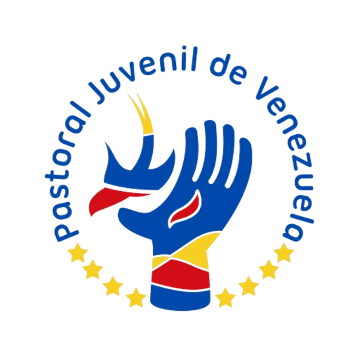

RealizadoRealizadoJornada · Juventud
17.ª Jornada Nacional de la Juventud: «Joven venezolano, ¡cree en las promesas del Señor!»
Jornada nacional con formación, caminata y Eucaristía, en el camino hacia la JMJ de Lisboa 2023.

Datos del evento
- Fecha
- 11 y 12 de febrero de 2023
- Hora
- No publicada en las notas oficiales.
- Modalidad y lugar
- Presencial · Diócesis de todo el país
- Organiza
- Departamento de Adolescencia y Juventud, por su programa Jóvenes y Jornada
- Estado
- Realizado
Cómo fue
Se unieron más de veinticinco diócesis, con la presencia de sus obispos. Hubo espacios formativos, una caminata y la Eucaristía.
El lema se inspiró en el camino hacia la JMJ de Lisboa 2023, con María como modelo de fe.
Qué se hizo
- Formación.
- Caminata.
- Eucaristía.
Quién participó
Solo cargos públicos. Los nombres de laicos participantes y de menores no se publican.
- Jóvenes de las diócesis participantes y sus obispos.
- Departamento de Adolescencia y Juventud (hoy Área de Juventud del Centro).
Cifras
- Más de 25 diócesis y unos 11.451 jóvenes, según la nota de la CEV del 16 de febrero de 2023. Es una cifra de la nota, no un dato oficial del Centro.